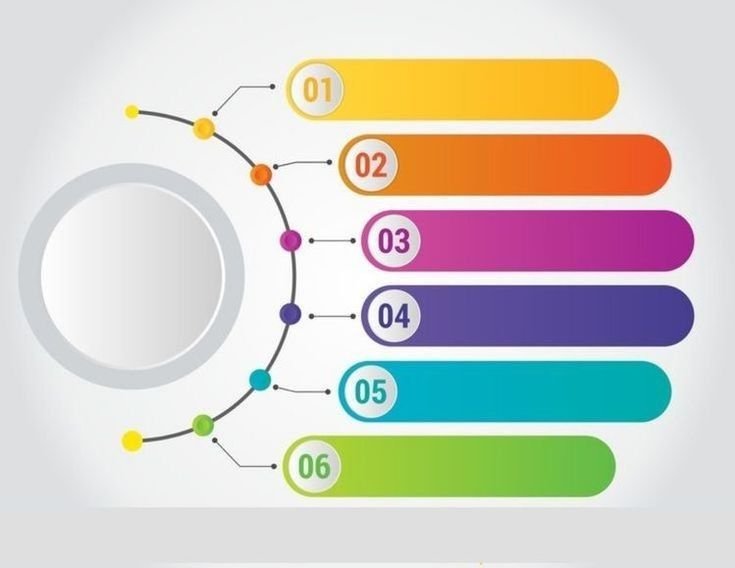

Rapports Annuels

Rapport Annuel 2023
Bilan complet de nos activités, résultats financiers et impact sur la santé des populations.
Nouveau
PDF - 2.4 MB

Rapport Annuel 2022
Expansion de nos programmes et consolidation de nos actions dans la région Centre-Nord.
Archivé
PDF - 2.1 MB

Rapport Annuel 2021
Première année d'opérations complète avec mise en place des programmes fondateurs.
Archivé
PDF - 1.8 MB